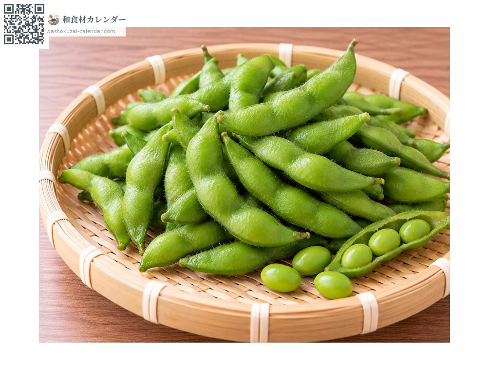
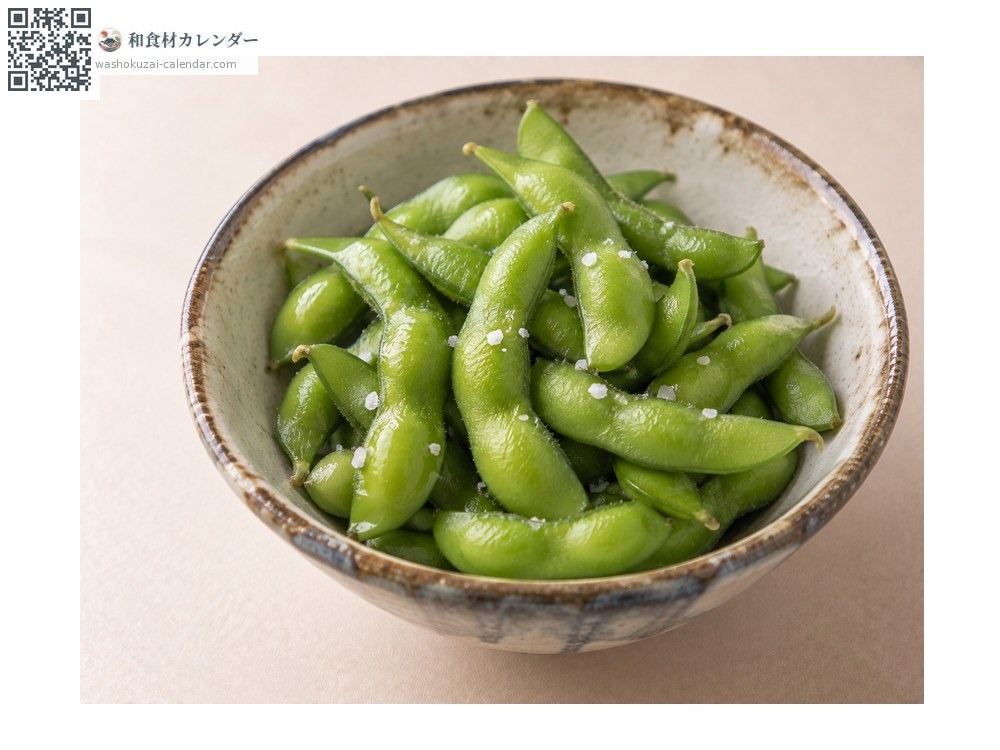
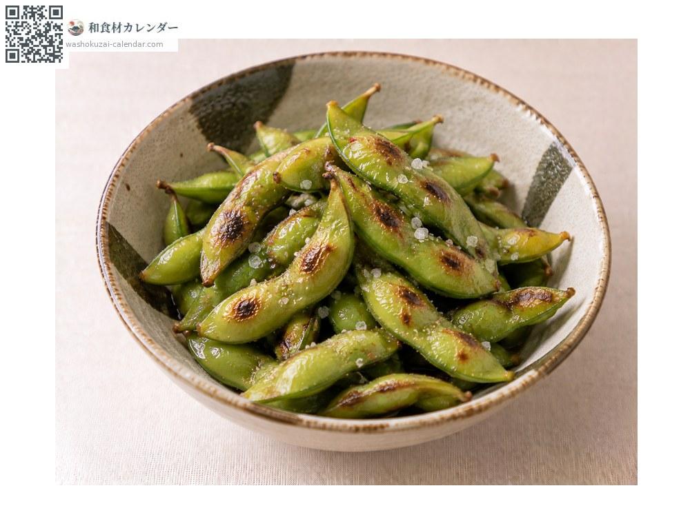
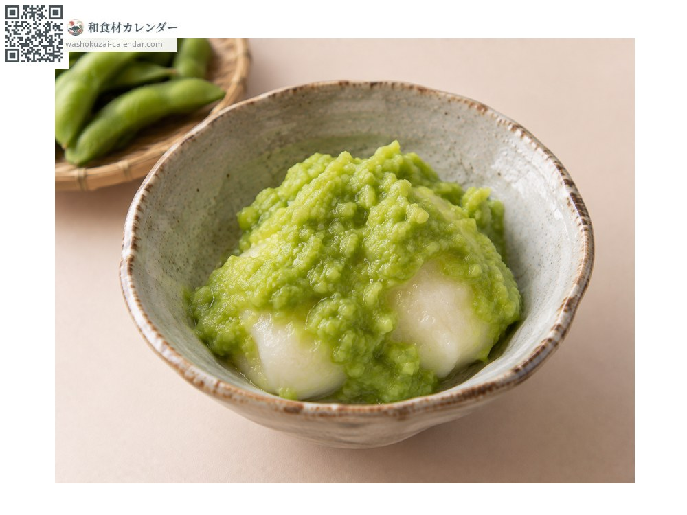
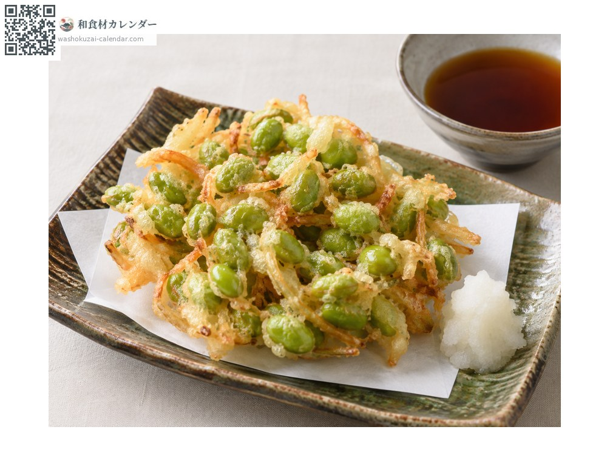

Vegetables
Edamame
エダマメ えだまめ edamame
Also known asedamame
At its best in Jul, Aug, Sep

When it is at its best
Jan
Feb
Mar
Apr
May
Jun
Jul
Aug
Sep
Oct
Nov
Dec
In seasonAvailable
How to cook

Boiled in salted water
Boil in about 4% salted water. Don't overcook.

Pan-charred edamame
Pan-charred in the pod. Very fragrant.

Zunda (mashed edamame with mochi)
Mashed and served with mochi. A Tohoku speciality.

Kakiage (mixed tempura fritter)
Beans shelled and fried as a fritter.
How to choose
Bright green pods with dense fine hairs and evenly swollen beans.
Storage
Sugars start falling the moment it is picked. Boiling the same day is best; boiled beans freeze well.
Main areas
Good to know
Soybeans harvested before maturity. Heirloom varieties such as dadacha-mame in Yamagata and Kurosaki cha-mame in Niigata are well known.
At their best around the same time
 Lettuce
Lettuce Bok choy
Bok choy Malabar spinach
Malabar spinach Myoga ginger
Myoga ginger Shiso
Shiso Shiso flower spike
Shiso flower spike Shiso seed spike
Shiso seed spike Sansho peppercorn
Sansho peppercorn